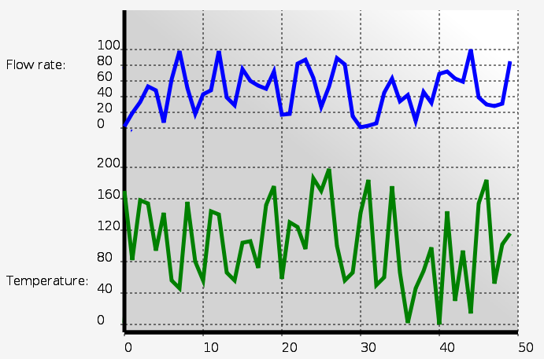

MBLogic
for an open world in automation
MBLogic
for an open world in automation
Help - HMI Strip Charts
Overview:
Strip charts allow the display of continuously varying data as trends.
Strip Charts:

Strip charts allow varying data to be displayed as trends. This can assist an operator in understanding how data is varying over time. Any value may be plotted as a strip chart. One value is plotted for each sample period. However, the HMI system is not an oscilloscope or data acquisition board, so only slowly changing data (e.g. once per second) is suitable for plotting.
SVG
<!-- For chart background. -->
<linearGradient id="ChartGradient" x1="0" y1="1" x2="1" y2="0">
<stop offset="50%" stop-color="lightgrey" />
<stop offset="90%" stop-color="white" />
</linearGradient>
<g transform="translate(150, 0)" class="buttonactivate">
<!-- Chart background. -->
<rect x="0" y="0" width="500" height="410" stroke="none"
fill="url(#ChartGradient)"/>
<!-- Y axis and tick marks. -->
<line x1="0" y1="0" x2="0" y2="410" stroke-width="5" />
<text x="-150" y="75" stroke-width="2px">Flow rate:</text>
<!-- Label the Y axis for chart 1 (top). -->
<g id="chartstyle" transform="translate(0, 150)">
<text x="-35" y="-100" >100</text>
<text x="-35" y="-80" >80</text>
<text x="-35" y="-60" >60</text>
<text x="-35" y="-40" >40</text>
<text x="-35" y="-20" >20</text>
<text x="-35" y="0" >0</text>
</g>
<!-- Y axis grid lines for chart 1 (top). -->
<g id="chartstyle" transform="translate(0, 150)"
stroke-dasharray="3,3">
<line x1="-5" y1="-100" x2="500" y2="-100" />
<line x1="-5" y1="-80" x2="500" y2="-80" />
<line x1="-5" y1="-60" x2="500" y2="-60" />
<line x1="-5" y1="-40" x2="500" y2="-40" />
<line x1="-5" y1="-20" x2="500" y2="-20" />
<line x1="-5" y1="0" x2="500" y2="0" />
</g>
<!-- Y axis tick marks for chart 2 (bottom). -->
<text x="-150" y="350" stroke-width="2px">Temperature:</text>
<!-- Label the Y axis for chart 2 (bottom). -->
<g id="chartstyle" transform="translate(0, 400)">
<text x="-35" y="-200" >200</text>
<text x="-35" y="-160" >160</text>
<text x="-35" y="-120" >120</text>
<text x="-35" y="-80" >80</text>
<text x="-35" y="-40" >40</text>
<text x="-35" y="0" >0</text>
</g>
<!-- Y axis grid lines for chart 2 (bottom). -->
<g id="chartstyle" transform="translate(0, 400)"
stroke-dasharray="3,3">
<line x1="-5" y1="-200" x2="500" y2="-200" />
<line x1="-5" y1="-160" x2="500" y2="-160" />
<line x1="-5" y1="-120" x2="500" y2="-120" />
<line x1="-5" y1="-80" x2="500" y2="-80" />
<line x1="-5" y1="-40" x2="500" y2="-40" />
<line x1="-5" y1="0" x2="500" y2="0" />
</g>
<!-- Label the X axis. -->
<line x1="0" y1="410" x2="500" y2="410" stroke-width="5" />
<g id="chartstyle" transform="translate(0, 410)">
<text x="0" y="25" >0</text>
<text x="100" y="25" >10</text>
<text x="200" y="25" >20</text>
<text x="300" y="25" >30</text>
<text x="400" y="25" >40</text>
<text x="500" y="25" >50</text>
</g>
<!-- X axis grid lines. -->
<line x1="0" y1="410" x2="500" y2="410" stroke-width="5" />
<g id="chartstyle" transform="translate(0, 410)"
stroke-dasharray="3,3">
<line x1="0" y1="5" x2="0" y2="0" />
<line x1="100" y1="5" x2="100" y2="-410" />
<line x1="200" y1="5" x2="200" y2="-410" />
<line x1="300" y1="5" x2="300" y2="-410" />
<line x1="400" y1="5" x2="400" y2="-410" />
<line x1="500" y1="5" x2="500" y2="-410" />
</g>
<!-- Chart 1 line. -->
<g transform="translate(0, 150)">
<polyline id="demochart1" fill="none" stroke="blue" stroke-width="5"
points="0,0" />
</g>
<!-- Chart 2 line. -->
<g transform="translate(0, 400)">
<polyline id="demochart2" fill="none" stroke="green" stroke-width="5"
points="0,0" />
</g>
</g>
Javascript:
// Strip charts. var DemoChart1 = new MB_StripChart(document, "demochart1", 50, 10, 1, 1.0); MBHMIProtocol.AddToDisplayList(DemoChart1, "StripChart1", "read"); var DemoChart2 = new MB_StripChart(document, "demochart2", 50, 10, 2, 1.0); MBHMIProtocol.AddToDisplayList(DemoChart2, "StripChart2", "read");
Javascript Library Functions:
The following Javascript library functions are useful for this feature:
- MB_StripChart
How it works:
MB_StripChart works by manipulating the "points" property of a polyline. The above example plots two different strip charts on the same screen. The SVG required for the graphs simply consists of the two polylines at the bottom of the example. The rest of the SVG is simply used to draw and label the axes, grid, and background. The dotted line styles are applied through CSS (see the demo samples).
Each chart object is initialised with a reference to the polyline, the maximum number of points to be plotted, the X increment between samples, the Y scale factor, and the minimum time between samples.
The minimum time between samples allows for the chart sampling rate to be slower than the polling rate. It also ensures that faster than normal polls (e.g. due to calls to immediate write functions) do not upset the normal sample time. The minimum sample time should not be set to less than the normal polling rate.
Chart colours, stroke (line) thicknesses, and other similar properties are set by editing the SVG properties in the polylines.